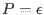
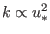
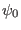
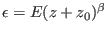
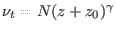

Next: Analyse the turbulence models Up: Module turbulence: its all Previous: Initialize the second-order model Contents
INTERFACE:
subroutine generate_modelDESCRIPTION:
Computes the parameters of an instance of the `generic' two-equation
model according to the specifications set in gotmturb.nml. This model
solves (152) for the  and (168) for the generic length-scale
defined in section 4.16 together with an Algebraic Stress Model. For several
simple turbulent flows, analytical solutions of this models exist and
can be used to calibrate the model coefficients. The method is described
in great detail in Umlauf and Burchard (2003). Also users that are
not interested in the generic part of GOTM should have a look in
this section, because results derived here are referenced in later
parts of the manual.
and (168) for the generic length-scale
defined in section 4.16 together with an Algebraic Stress Model. For several
simple turbulent flows, analytical solutions of this models exist and
can be used to calibrate the model coefficients. The method is described
in great detail in Umlauf and Burchard (2003). Also users that are
not interested in the generic part of GOTM should have a look in
this section, because results derived here are referenced in later
parts of the manual.
After the call to generate_model(), all parameters of the generic two-equation model are known. The user has full control over specific properties of the resulting model (see section 4.16).
In the following sections, the effects of model parameters on the behaviour of two-equation models in specific situations are briefly reviewed. For a more in-depth discussion, see Umlauf and Burchard (2003).
The logarithmic boundary layer
In the logarithmic boundary layer one has  and  by defintion. Under these conditions it is easy to show that a solution of (152) is
Decay of homogeneous turbulence
Another example of a simple but fundamental turbulent situation is the
temporal decay of isotropic, homogeneous turbulence (approximated by
the spatial decay of turbulence behind grids in laboratory settings).
At large times,  , data from many experiments are well described by
a power law of the form
, data from many experiments are well described by
a power law of the form
In homogeneous decaying turbulence, (152) and (168) reduce
to a balance between the rate and dissipation terms, respectively. The
coupled system of ordinary differential equations can be solved for
given initial values and  (see e.g. Wilcox (1998)).
The solution can be shown to reduce to (105) at large times.
Then, the decay exponent,  , is determined by
, is determined by
Homogeneous turbulent shear-flows
A natural extension of decaying homogeneous turbulence is the inclusion of a homogeneous shear and an aligned homogeneous stratification. Since turbulence is still assumed to be homogeneous, the divergence of any turbulent transport term vanishes and the interplay between the stabilizing effects of stratification and the destabilizing action of shear can be isolated. Thus, it is not surprising that this interesting special case of turbulence has been explored extensively by laboratory experiments (Tavoularis and Corrsin (1981a); Tavoularis and Corrsin (1981b), Tavoularis and Karnik (1989), Rohr et al. (1988)), by Direct Numerical Simulation (Gerz et al. (1989), Holt et al. (1991), Jacobitz et al. (1997), Shih et al. (2000)) and by Large-Eddy Simulation (Kaltenbach et al. (1994)). That flows of this kind are crucial also in many oceanographic flows has been pointed out by Baumert and Peters (2000).
In the context of the generic two-equation model, this turbulent flow is mathematically established by neglecting the turbulent transport terms and the advective part of the material time derivative. Then, (152) and (168) reduce to a set of ordinary differential equations. Using the chain rule of differentiation, the relation
Tennekes (1989) derived an equation similar to
(108), however only for the special case of the
 -
- model applied to unstratified flows, and stated that
`on dimensional grounds,
model applied to unstratified flows, and stated that
`on dimensional grounds,  cannot depend upon the shear because the
shear is homogeneous and cannot impose a length scale'. This argument
requires immediately
cannot depend upon the shear because the
shear is homogeneous and cannot impose a length scale'. This argument
requires immediately
Shear-free turbulence, wave-breaking
The first step in understanding the behaviour of two-equation models in the surface layer affected by breaking gravity waves is the investigation of a special case, in which turbulence decays spatially away from a planar source without mean shear. Turbulence generated by an oscillating grid in a water tank has been used in various laboratory settings to study the spatial decay of velocity fluctuations in this basic turbulent flow, where turbulent transport and dissipation balance exactly. For a summary of these results, see Umlauf et al. (2003).
All grid stirring experiments confirmed a power
law for the decay of  and a linear increase of the length scale,
and a linear increase of the length scale,  ,
according to
,
according to
In stationary, shear-free, unstratified turbulence, the generic model
simplifies to a balance between the turbulent transport terms and the
dissipative terms in (152) and (168). Using the definition
of  in (167) and the scaling for the rate of
dissipation, (155), the transport and dissipation of
in (167) and the scaling for the rate of
dissipation, (155), the transport and dissipation of  and
and
 are balanced according to
are balanced according to
For the solution of this non-linear system , we inserted the expressions (110) in (111). From (155) and (46), power-laws follow then also for  and .
Inserting (110) into (111) yields the
equation
yields the
equation
We note that with the help of (106) and (109), the relation (104) can be rewritten as
After assigning appropriate values for the von Kármán
constant,  , the decay coefficient of homogeneous turbulence,
, the decay coefficient of homogeneous turbulence,
 , the spatial decay rate,
, the spatial decay rate,  , and the slope,
, and the slope,  , an infinite
number of pairs of and
, an infinite
number of pairs of and  satisfying (115) can be derived.
Each corresponds to a different two-equation model. Some example are
given in table 5 (see Umlauf and Burchard (2003)).
satisfying (115) can be derived.
Each corresponds to a different two-equation model. Some example are
given in table 5 (see Umlauf and Burchard (2003)).
|
Mixed layer deepending
The correct prediction of mixed layer deepening into a stratified fluid due to a wind stress at the surface is one of the most crucial requirements for an oceanic turbulence model. This situation has been frequently interpreted by analogy with the classical experiment of Kato and Phillips (1969) and its re-interpretation by Price (1979), in which the entrainment in a linearly stratified fluid subject to a constant surface stress was investigated. The results of this experiment have been used by numerous authors to calibrate their turbulence models.
In particular, it has been shown by Burchard and Bolding (2001) for the
 -
- model of Rodi (1987), by Burchard (2001b) for the
model of Rodi (1987), by Burchard (2001b) for the
 model of Mellor and Yamada (1982), and by Umlauf et al. (2003)
for the
model of Mellor and Yamada (1982), and by Umlauf et al. (2003)
for the  -
- model of Wilcox (1988) that, remarkably, the mixed
layer depth predicted by these models depends almost exclusively on
the value of the Richardson number,
, computed in a homogeneous, stratified shear-flow in steady-state. This value is
usually referred to as the steady-state Richardson number,
model of Wilcox (1988) that, remarkably, the mixed
layer depth predicted by these models depends almost exclusively on
the value of the Richardson number,
, computed in a homogeneous, stratified shear-flow in steady-state. This value is
usually referred to as the steady-state Richardson number,  (Rohr et al. (1988), Kaltenbach et al. (1994), Jacobitz et al. (1997),
Shih et al. (2000)).
(Rohr et al. (1988), Kaltenbach et al. (1994), Jacobitz et al. (1997),
Shih et al. (2000)).
Umlauf et al. (2003) showed that in the context of models considered in GOTM, the steady-state Richardson number is determined by the relation
Note, that in instable situations, a different value of the parameter needs to be used. This does not cause a discontinuity in the model because the buoyancy term in (168) is zero at the transition. An evaluation of the length-scale equations in convective flows, however, is intimately related to the third-order modelling of the triple correlation terms, a topic outside the scope of this documentation.
USES:
IMPLICIT NONEREVISION HISTORY:
Original author(s): Lars Umlauf
Karsten Bolding 2012-12-28